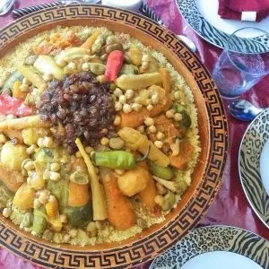

Moroccan Couscous

Description
The couscous with Seven Vegetables is a very popular variation of Moroccan couscous features a variety of fresh vegetables stewed alongside lamb, beef or chicken.
For authentic results:
- The couscous should be steamed three times over the simmering broth.
- Dried chickpeas are preferred over canned.
- Remember to soak them overnight(the peas)
Ingrediant
- Couscous
- Meat and Broth Seasoning.
- Optional Tfaya - Caramelized Onions and Raisins
Steps
-
Ahead of Time:
Soak the dried chickpeas in a large bowl of water overnight. (Or, use a quick soak method: boil the dried chickpeas for 4 or 5 minutes, then turn off the heat and leave them to soak for an hour.)
- Begin Making the Broth
- First Steaming of the Couscous